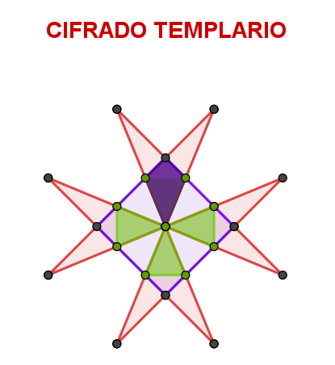

Adornando el patio
Para la feria medieval tienes que recortar banderines con forma de cometas y dardos. Vas a investigar cómo pasar de uno a otro de forma sencilla.
Necesitarás un folio de papel y unas tijeras. Sigue las instrucciones del tutorial:
Para la feria medieval tienes que recortar banderines con forma de cometas y dardos. Vas a investigar cómo pasar de uno a otro de forma sencilla.
Necesitarás un folio de papel y unas tijeras. Sigue las instrucciones del tutorial:
La cruz patada que se ve en la foto de la puerta de la iglesia de San Miguel de Xagoaza, es frecuente en el Camino de Invierno.

Esta cruz también se llamaba la cruz de las ocho puntas y fue utilizada como clave criptográfica para el alfabeto secreto de la Orden de los Templarios.
Con ella se cifraban y descifraban documentos mediante signos geométricos de forma triangular que podían dibujarse a partir de la cruz.
Actividad:
Construye la cruz de Malta en GeoGebra siguiendo este tutorial.
Obra publicada con Licencia Creative Commons Reconocimiento Compartir igual 4.0